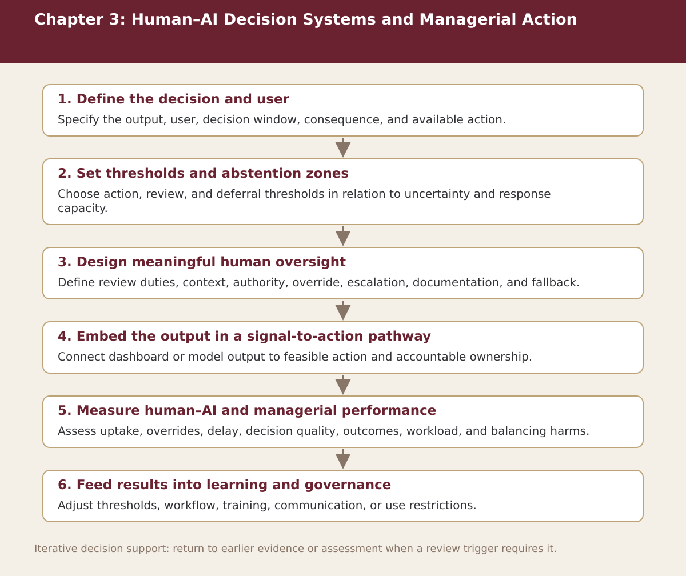

Chapter 3
Human–AI Decision Systems and Managerial Action
Chapter-level process map linking the chapter’s decision questions to the companion resources and decision gates.

Process steps
| Step | Stage | Purpose | Required Input | Expected Output | Decision Or Gate |
|---|---|---|---|---|---|
| 1 | Define the decision and user | Specify the output, user, decision window, consequence, and available action. | Local evidence and the prior approved step | Versioned record for: Define the decision and user | Proceed, revise, escalate, restrict, or stop as appropriate |
| 2 | Set thresholds and abstention zones | Choose action, review, and deferral thresholds in relation to uncertainty and response capacity. | Local evidence and the prior approved step | Versioned record for: Set thresholds and abstention zones | Proceed, revise, escalate, restrict, or stop as appropriate |
| 3 | Design meaningful human oversight | Define review duties, context, authority, override, escalation, documentation, and fallback. | Local evidence and the prior approved step | Versioned record for: Design meaningful human oversight | Proceed, revise, escalate, restrict, or stop as appropriate |
| 4 | Embed the output in a signal-to-action pathway | Connect dashboard or model output to feasible action and accountable ownership. | Local evidence and the prior approved step | Versioned record for: Embed the output in a signal-to-action pathway | Proceed, revise, escalate, restrict, or stop as appropriate |
| 5 | Measure human–AI and managerial performance | Assess uptake, overrides, delay, decision quality, outcomes, workload, and balancing harms. | Local evidence and the prior approved step | Versioned record for: Measure human–AI and managerial performance | Proceed, revise, escalate, restrict, or stop as appropriate |
| 6 | Feed results into learning and governance | Adjust thresholds, workflow, training, communication, or use restrictions. | Local evidence and the prior approved step | Versioned record for: Feed results into learning and governance | Proceed, revise, escalate, restrict, or stop as appropriate |